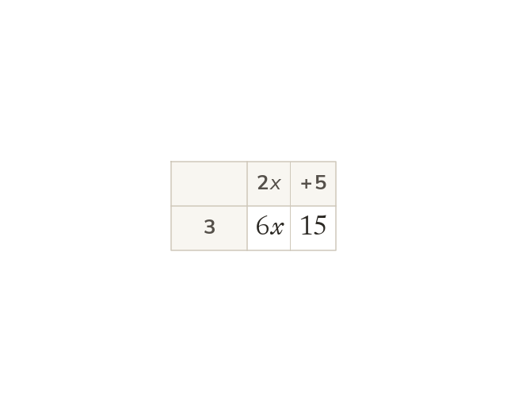

Expanding a single bracket
Expanding multiplies every term inside the bracket by the term outside. So 3(2x+5) = 6x+15. A negative outside multiplies every term too: -2(3x-4) = -6x+8.
Expanding a bracket means multiplying every term inside it by the term (or number) outside. 3(2x+5) means 3 lots of (2x+5): multiply both 2x and 5 by 3, giving 6x+15. If the term outside is negative, e.g. -2(3x-4), the negative multiplies every term inside too: -2 × 3x = -6x, and -2 × -4 = +8, giving -6x+8 - the sign of the second term flips because a negative times a negative is positive.